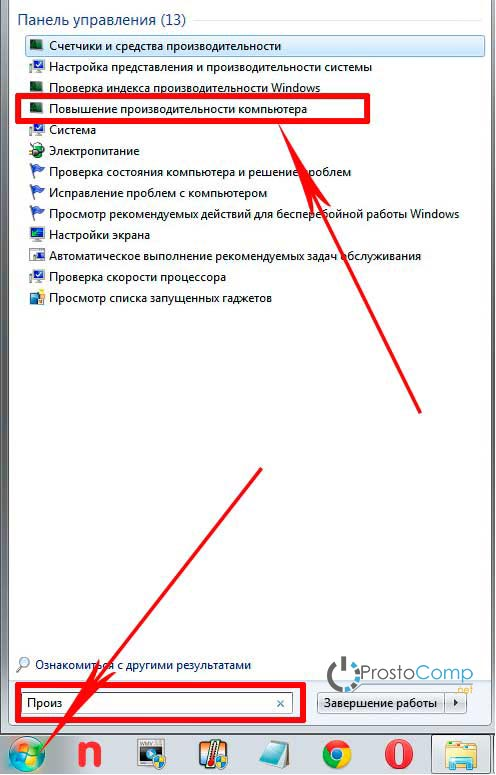
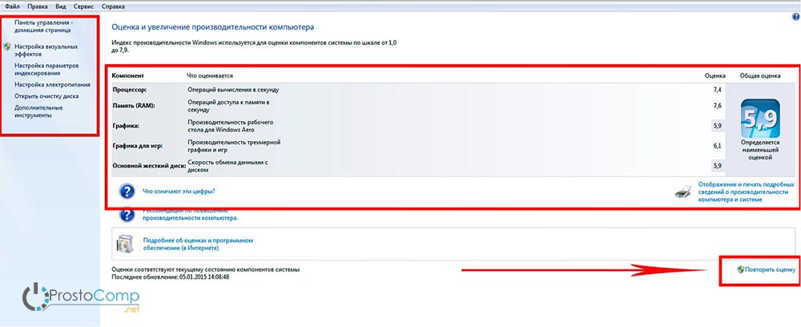
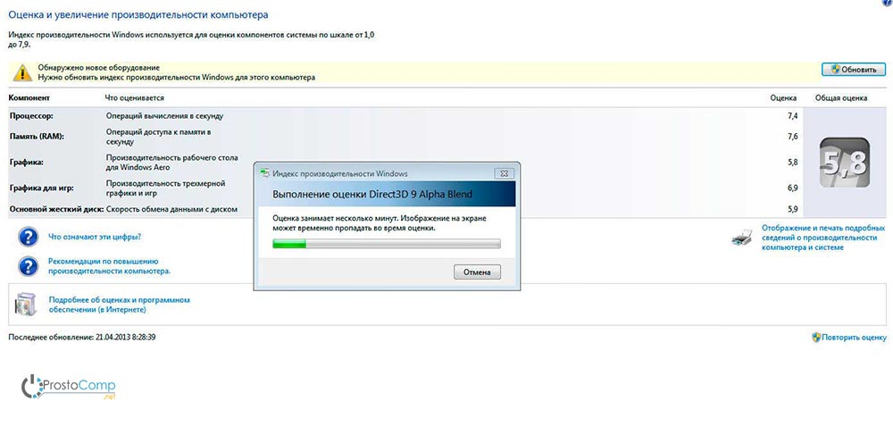
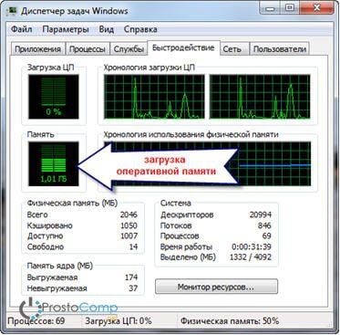
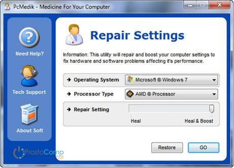
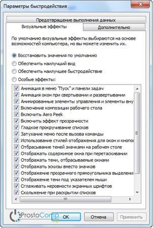
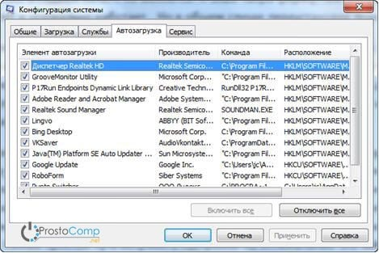
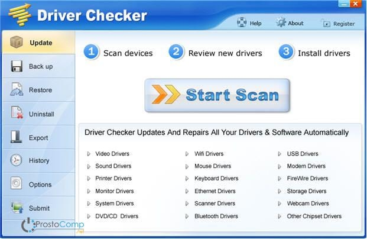

Производительность ПК. Проблемы производительности. Анализ журналов событий.
Как повысить производительность компьютера
Казалось бы, вполне шустрый компьютер, который вначале полностью удовлетворял своими возможностями, со временем начинает тормозить. Что могло послужить причиной такого снижения производительности? Или бывает еще другая ситуация, когда нужно работать в очень ресурсоемких программах (играх), а компьютер их просто не тянет. В любом случае, перед пользователем встает проблема производительности ПК, которую нужно решать.
Основными признаками медленной работы компьютера являются:
- Долгое включение и такое же долгое выключение компьютера.
- Многие программы очень долго запускают, загрузка игр занимает очень много времени.
- Реакция курсора может не успевать за движениями мышки, притормаживать, или наблюдается поздняя реакция на клик.
- И другие признаки замедленной работы ПК, из-за которых пользователь начинает нервничать.
Что может быть причиной торможения компьютера?
Если компьютер тормозит, то причина (или сразу несколько причин) могут быть следующие:
- Плохая совместимость программного обеспечения, операционной системы, игр с конфигурацией «железа» самого компьютера.
- Большая фрагментация файловой системы, на жестком диске скопилось много программного хлама.
- Проблемы с операционной системой, сбои, неправильная настройка.
- Большое количество запущенных служб, в которых нет необходимости.
- Заражение компьютера вредоносным программным обеспечением.
- Программные конфликты (между драйверами, антивирусами и др.).
- Плохая терморегуляция, выход из строя кулера, засорение радиаторов.
- Нарушение основных параметров в BIOS.
Как решить эту проблему и повысить производительность компьютера?
Существует множество способов, позволяющих ускорить работу компьютера. Мы предлагаем десять методов улучшения работы ПК, показавших свою эффективность на практике.
- Апгрейдим «железо».
- Чистка внутренностей, ремонт неисправных элементов системы охлаждения.
- Очищаем жесткий диск от всего ненужного, выполняем дефрагментацию.
- Переустанавливаем операционную систему.
- Оптимизируем работу ОС.
- Настраиваем BIOS.
- Отключаем все лишнее, контролируем автозагрузку.
- Выполняем обновление драйверов.
- Устанавливаем операционную систему соответствующую нашему ПК.
- Чистим систему от вирусов.
Далее, для лучшего понимания, мы дадим более подробное описание каждого из этих пунктов. Но для начала, нам необходимо узнать производительность своего компьютера.
Определяем производительность
В операционной системе Windows 7 уже встроена специальная функция для проверки производительности системы и быстродействия компьютера.
Откройте меню «Пуск» и в специальном поисковом поле (оно находится внизу меню) введите «произ», как это показано на рисунке.

Среди результатов поиска будет программа «Повышение производительности компьютера». Запустите ее и откроется следующие окно.

Снизу сделайте клик по кнопке «Повторить оценку». Программа начнет анализировать продуктивность вашей системы и по завершению выдаст результаты, по которым можно будет сделать вывод о быстродействии компьютера.

После этого можно приступать к повышению производительности компьютера выбранными способами.
Апгрейдим комплектующие компьютера
У многих, кто является «счастливым» обладателем тормозящего компьютера, возникает стойкое желание заменить его чем-нибудь по мощнее. Но мы не станем двигаться в этом направлении, оно подходит только для серьезно устаревающих компьютеров. В большинстве случаев достаточно заменить только один или несколько слабых элементов, чтобы вся система снова начала летать — этот способ будет намного дешевле, чем покупка нового ПК.
- Центральный процессор. Смысл замены «камня» будет действительно оправдан, только если новый намного превзойдет старого по мощности, не менее чем на 30%. Иначе вы не почувствуете серьезной разницы, но зато потратите много денег.
Любители риска могут попытаться разогнать центральный процессор. Этот способ подойдет не многим, ведь далеко не каждый ЦП может разгоняться. Зато в случае успеха, покупку нового «камня» можно отложить еще на год другой. Суть этой операции заключается в повышении напряжения на центральном процессоре, и тем самым увеличение его тактовой частоты. Сама операция достаточно рискованная и далеко не для всех процессоров, в некоторых случаях можно просто вывести из строя ЦП, или значительно сократить срок его службы.
- Оперативная память. Ее никогда не бывает много, можете смело увеличивать оперативную память. Тем более она стоит достаточно дешево. Когда компьютер сильно загружен, откройте диспетчер задач на вкладке быстродействия и посмотрите уровень используемой памяти. Если он превышает 80%, то можете увеличивать память в полтора два раза.
-

- Винчестер. И суть тут вовсе не в его объеме и количестве свободного места. Основная фишка быстродействия жесткого диска заключается в скорости вращения его мотора. К примеру, мы имеем диск со скоростью 5400 оборотов и заменяем него на диск со скоростью 7200 оборотов. Это намного более ощутимо добавит скорости для систем, особенно скорости записи/чтения.
- Видеокарта. Большинству понятно, что для более реалистичной графики в играх необходимо иметь мощный видеоадаптер. Так что, если ваша видеокарта не может похвастаться хорошей производительностью, меняйте на новую, которая гораздо превосходит ее по мощности. Главное – нужно учитывать, что для мощной видеокарты нужен и мощный процессор.
Чтобы приблизительно определить слабые места системы, воспользуйтесь встроенной функцией оценки производительности компьютера, о которой мы уже рассказывали выше. Определить «слабое звено» можно по оценкам, которые выводятся после проверки производительности. Там, где самая низкая оценка, в том направлении и необходимо увеличивать мощность ПК. К примеру, если возле скорости обмена данными на диске стоит самая низкая оценка, то стоит задуматься о покупке более шустрого жесткого диска.
Чистка внутренностей, ремонт неисправных элементов системы охлаждения
Различные неисправности в системе охлаждения также способны существенно замедлить работу всей системы. Если ломается кулер на центральном процессоре, то это привод к его перегреву и снижению тактовой частоты.
Перегрев вообще опасная штука и возникать может даже при исправной системе охлаждения. Возьмите, снимите крышку со своего системного блока, посмотрите сколько там пыли. Она не просто покрывает все поверхности, но и плотно забивается во все радиаторы и оседает на лопастях кулеров. Пыль выступает таким себе теплоизолятором, который приводит к перегреву. Очень аккуратно почистите системный блок и вам удастся увеличить скорость работы компьютера, а также продлить срок службы его компонентов и избавиться от главного рассадника различных аллергенов и бактерий — пыли.
Очищаем жесткий диск от всего ненужного, выполняем дефрагментацию
Те, кто впервые слышит термин «дефрагментация», должны понять, что это самое первое что нужно делать для повышения производительности системы. Дефрагментация позволяет собирать различные фрагменты программ, которые находятся в разных частях жесткого диска, в одну кучу. Благодаря этому, считывающему устройству винчестера не нужно выполнять много лишних перемещений по дискам, ведь все находится в одном месте. Таким образом и повышается производительность.
Кроме того, нужно избавиться от лишней информации и всякого программного хлама, который накапливается на диске со временем работы. Особенно это важно, когда в разделе операционной системы практически нет свободного места. Если места менее 2 Гб, система теряет свою производительность. Так что не перегружайте диск и старайтесь, чтобы на нем было процентов тридцать свободного места, если это конечно возможно.
Переустанавливаем операционную систему
Этот шаг почти всегда помогает увеличить скорость работы компьютера. В некоторых случаях, производительность может увеличиться в три раза. Просто такова суть операционной системы, со временем в ней накапливаются различные ошибки, она забивается ненужными службами, которые даже выполняют серьезные изменения в самой системе. Это и многое другое приводит к ухудшению скорости работы компьютера, на многие операции теперь требуется гораздо больше времени.
Если тщательно следить за чистотой системы и ничего туда не устанавливать, то можно годами пользоваться одной и той же Windows. Но чаще всего, на компьютере постоянно происходит движение: устанавливаются и удаляются программы, обновляются драйвера, загружаются большие объемы различной информации — в таких условиях система постепенно начинает «тупить». Лучше всего, для профилактики, где-то раз в год форматировать диск и с чистого листа устанавливать новую операционную систему.
Оптимизируем работу ОС
Хорошо себя показала программа PCMedic. Главная фишка этой утилиты, это полная автоматизация всех операций. Нужно только выбрать подходящие параметры и запустить процесс настройки.
Программа состоит только из одного главного окна. Тут мы выбираем свою операционную систему, тип центрального процессора (например, Intel или AMD), дальше нужно выбрать один из двух способов оптимизации — Heal (очистка системы), либо Heal & Boost (кроме очистки выполняется еще и ускорение). После того, как выберите все параметры нажмите на кнопочку «Go» – программа выполнит все необходимые изменения.

Есть еще одна программа, которая может похвастаться воистину мощным функционалом — Ausloqics BoostSpeed, к сожалению, платная. Она состоит из нескольких утилит, позволяющих выполнять оптимизацию системы практически во всех направлениях. Используя это приложение можно провести дефрагментацию, почистить файловую систему, очистить реестр, увеличить скорость работы интернета и еще много другого. Программа обладает встроенным советчиком, который помогает определить приоритетные направления в оптимизации системы. Хотя рекомендую слепо не доверяться советчику и смотреть, действительно ли эти все действия вам необходимы.
Для того, чтобы чистить систему от всякого хлама, существует множество специальных приложений для очистки. Например, хорошим помощником может оказаться Ccleaner. Он способен почистить диск от ненужных, временных фалов и выполнить очистку реестра. Благодаря удалению ненужных файлов, можно увеличить количество свободного места на жестком диске. А вот при чистке реестра, особого повышения производительности не наблюдается. Зато если будет случайно удален какой-нибудь важный параметр, система начнет выдавать ошибки и это может привести к серьезным сбоям.
ВНИМАНИЕ! Перед тем, как выполнять все эти действия, настоятельно рекомендуется создать точку восстановления!
ВСЕГДА смотрите файлы, которые удаляют утилиты для очистки системы. Бывают случаи безвозвратного удаления нужных и даже важных файлов, которые программы ложно приняли за ненужные, или временные файлы.
Пользователи Windows 7 могут немного улучшить скорость работы компьютера при помощи упрощения графического интерфейса. Что бы это сделать откройте Панель управления и зайдите в раздел «Система» откройте пункт «Дополнительно» и выберите «Параметры». Здесь снимаем часть ненужных флажков, либо устанавливаем переключатель в положение для обеспечения наилучшего быстродействия.

Настраиваем BIOS
В БИОСе хранятся параметры компьютера, отвечающие за оборудование, загрузку ОС, время и других ключевые элементы. Чтобы попасть в параметры BIOS, в процессе включения ПК, перед загрузкой самой операционной системы, нажмите клавишу Del, F2 или другую (это зависит от производителя материнской платы, обычно название клавиши отображается на экране). Чаще всего настройки БИОСа не вызывают никакого снижения производительности и туда даже не стоит лазить. Но в редких случаях, при неправильных критических параметрах, ваш компьютер может начать тормозить.
Если сомневаетесь в правильности настроек, но не знаете какие нужно указать, то можете воспользоваться опцией автоматической настройки оптимальных параметров «Load Optimal Settings» (название функции может быть иным, в зависимости от производителя). После этого сохраните все настройки и выполните перезагрузку компьютера.
Отключаем все лишнее, контролируем автозагрузку
В наше время практически каждая программа пытается прописать себя в автозагрузку. И это не слишком весело для вашей системы. Постепенно, программы в автозагрузке накапливаются и их всех надо запускать, при каждом старте системы. Из-за этого компьютер очень долго включается и выключается. Дополнительно, после автозагрузки, все эти приложения остаются в рабочем состоянии, пожирая ресурсы. Вы только взгляните сколько на панели задач (возле часов) ненужных значков, разве вы их используете? Поэтому, лучше всего удалять ненужные приложения, или хотя бы отключать для них автозагрузку.
Что бы посмотреть все приложения, которые стартуют вместе с Windows, и отключить лишние, одновременно зажмите две клавиши Win+R и в следующем окошке напишите msconfig, затем нажмите Enter. Появится окошко конфигурацией системы, теперь перейдите в раздел автозагрузки. Здесь будет находиться список приложений, стоящих в автозагрузке. Просто снимаете галочки со всех, которыми не пользуетесь. В случае чего, программу всегда можно вернуть в автозагрузку, установив нужную галочку. Главное иметь представление, что это за программы и какое их назначение.

В самых крайних случаях, можно отключить антивирус, и система немного разгрузится. За счет этого повысится производительность. Но этого не стоит делать, когда вы находитесь в интернете, или устанавливаете новые программы, потому что есть риск заражение вирусами.
Выполняем обновление драйверов
Этот шаг может дать нужных эффект, если установлены устаревшие драйвера или те что установились вместе с системой. Больше всего может влиять драйвер для материнской платы, хотя и другие неплохо воздействуют на скорость работы.
Надежнее всего вручную выполнять обновление драйверов. Но самые ленивые могут воспользоваться специальными утилитами, которые способны сами определять необходимые драйвера, находить их в интернете и устанавливать. Например, можно воспользоваться Drover Checker.

Устанавливаем операционную систему соответствующую нашему ПК
Если у вас компьютер, с 2 Гб оперативной памяти и вы используете Windows XP, то стоит задуматься о переходе на «семерку», после этого сразу почувствуете положительную разницу. А если на компьютере двухъядерный процессор и 4 Гб памяти (а может даже больше), то необходимо использовать 64х разрядную Windows 7.
И да, избегайте кустарных сборок Windows, таких как Zver и тому подобных. Используйте исключительно чистые, оригинальные дистрибутивы.
Чистим систему от вирусов
Не обращайте внимание на то, что этот пункт стоит под номером десять. На самом деле это одна из самых распространенных причин медленной работы компьютера. Если заметили, что компьютер внезапно начал долго «думать», срочно выполните сканирование на наличие вредоносного ПО. Лучше всего выполнить сканирование системы штатным антивирусом (например, Антивирусом Касперского), а затем просканировать дополнительными антивирусными утилитами, типа Dr. Web CureIt, AVZ и др.
Вот и все основные способы, позволяющие увеличить быстродействие компьютера. В многих следующих статьях, мы будем еще неоднократно затрагивать проблему производительности системы и все эти рекомендации будут рассмотрены еще более подробно, со всеми тонкостями. Ну а на сегодня все, если возникнут вопросы – можете смело задавать их в комментариях к статье.